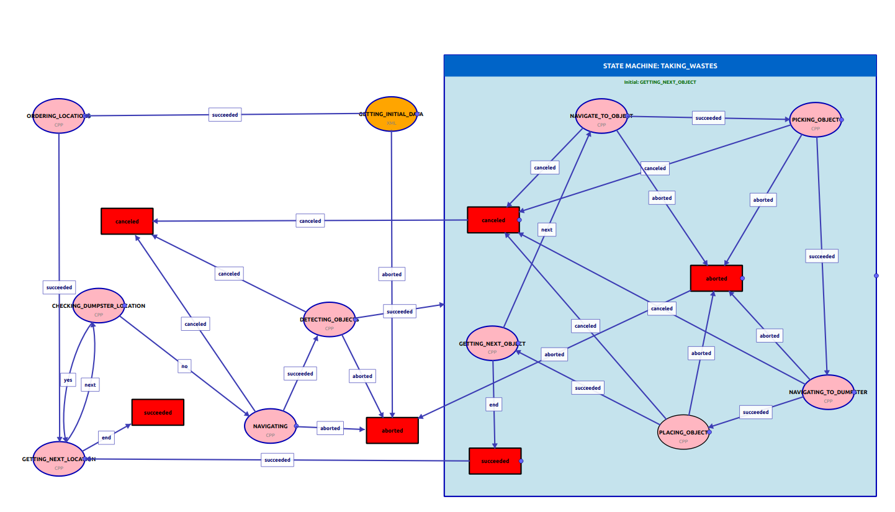

Main Concepts
YASMIN (Yet Another State MachINe) is designed to simplify the creation of complex robot behaviors using state machines. Understanding the core concepts is essential for using the library effectively.
Finite State Machines (FSM)
A Finite State Machine is a mathematical model of computation. It is an abstract machine that can be in exactly one of a finite number of states at any given time. The FSM can change from one state to another in response to some inputs; the change from one state to another is called a transition.
In the context of robotics, FSMs are used to define the behavior of a robot. Each state represents a specific task or mode of operation (e.g., "Idle", "Moving", "Grasping"), and transitions define how the robot switches between these tasks based on sensor data or internal logic.
FSMs provide several key advantages for robot control: they offer a clear, visual representation of robot behavior that is easy to understand and debug; they ensure deterministic behavior where the robot's actions are predictable and reproducible; and they enable modular design where each state encapsulates a specific functionality that can be developed and tested independently. This makes FSMs particularly well-suited for complex robotic applications where reliability and maintainability are crucial.
In YASMIN, FSMs are implemented as state machine objects that manage the execution flow. You define states, add them to the state machine with their transition logic, and then execute the state machine. The framework handles the state execution loop, transition management, and data sharing through the blackboard, allowing you to focus on implementing the behavior logic within each state.
Hierarchical Finite State Machines (HFSM)
As systems become more complex, a simple "flat" FSM can become unmanageable due to the explosion of states and transitions. Hierarchical Finite State Machines (HFSM) address this by allowing states to contain other state machines.
In YASMIN, you can nest state machines within states. This allows you to encapsulate complex behaviors into reusable modules. For example, a "Navigation" state could internally be an FSM with states like "Plan Path", "Follow Path", and "Recover". The parent FSM only sees the high-level "Navigation" state.
The hierarchical approach provides significant architectural benefits. It enables abstraction layers where high-level state machines deal with strategic decisions while nested state machines handle tactical execution details. This separation of concerns makes the overall system easier to understand, test, and maintain. Each nested state machine can be developed and validated independently before being integrated into the larger system.
YASMIN's implementation of HFSM is particularly powerful because nested state machines are treated as regular states from the parent's perspective. They receive the same blackboard access, can use remapping just like simple states, and return outcomes that drive transitions in the parent machine. This uniformity means you can refactor a simple state into a complex nested state machine without changing the parent's logic, enabling iterative refinement of behaviors as requirements evolve.
Hierarchical composition also facilitates team collaboration on large robotic systems. Different team members can work on different nested state machines simultaneously, with clear interfaces defined by the blackboard keys and outcomes. This modular structure supports parallel development and makes it easier to reuse proven behavior components across multiple robot applications.
Key Components in YASMIN
State
The fundamental building block. A state performs a task and returns an
outcome. In YASMIN, you create custom states by
inheriting from the State class and implementing the
execute method.
Each state is designed to be self-contained and focused on a single
responsibility. When you create a state, you define what inputs it
needs from the blackboard, what outputs it produces, and what outcomes
it can return. The execute method contains the core logic
of the state - this could be anything from simple data processing to
complex interactions with robot hardware or external services.
In addition to execute(), a state can also override
configure(). When a state is executed as part of a
StateMachine or Concurrence,
configure() is called during container configuration
before the actual execution starts. Containers keep track of their
configuration state, so this step is only performed once.
As a general design rule, the constructor should only contain the
stable definition of the state, such as registering outcomes and
declaring metadata like descriptions, input keys, output keys, and
parameters. Initialization logic, validation, resource allocation, and
setup that depend on configured values should go into
configure(). This keeps the state interface explicit and
makes the implementation easier to inspect and reuse.
States can be stateless (performing the same operation every time) or stateful (maintaining internal variables between executions). YASMIN supports both patterns, giving you flexibility in how you design your behaviors. For example, a counter state might maintain an internal count that increments on each execution, while a sensor reading state might be completely stateless, simply querying a sensor and returning the result each time.
Outcomes
Every state execution concludes with an outcome (a string). This outcome determines which transition is triggered. Common outcomes include "success", "failure", "aborted", or custom events like "target_detected". Outcomes are the glue that connects states together - they define the flow of execution through your state machine.
You can define custom outcomes for your states to represent different completion scenarios. For example, a "GraspObject" state might have outcomes like "grasped", "object_not_found", "gripper_error", each leading to different next states or recovery behaviors. This flexibility allows you to model complex decision trees and error handling logic in a clear, explicit way.
Transitions
Transitions map the outcome of a state to the next state to be executed. This defines the flow of the application. When you add a state to a state machine, you specify a dictionary of transitions where each key is a possible outcome from that state, and the value is the name of the next state to execute. This creates a directed graph that represents your application's logic. Transitions can point to other states, loop back to the same state (useful for retry logic), or terminate the state machine by mapping to a final outcome. The transition mechanism is what makes YASMIN a true finite state machine, ensuring deterministic and predictable behavior flows.
Blackboard
The Blackboard is a shared memory space that allows states to exchange data. Since states are often independent classes, they need a mechanism to pass information (e.g., a target pose found by a "Perception" state needs to be passed to a "Move" state). The Blackboard stores key-value pairs that are accessible to all states in the FSM.
States can also declare blackboard metadata for the
keys they expect to read or write. Input keys are registered with
add_input_key(), and output keys are registered with
add_output_key(). These metadata entries can include the
key name, a description, and an optional default value. The declared
metadata can later be inspected through get_input_keys(),
get_output_keys(), or the full
get_metadata() API.
Input key metadata is not only descriptive. If an input key declares a default value and that key is missing from the shared blackboard when the state is executed, YASMIN injects the default value automatically. This makes it possible to document the expected interface of a state, provide safe defaults, and expose that information to tools such as the editor and factory without changing the execution logic of the state itself.
One of the most powerful features of the Blackboard is
remapping. Remapping allows you to connect states
with different key names without modifying the state classes
themselves. For example, if a state reads from
input_data and another state writes to
sensor_reading, you can remap input_data to
sensor_reading when adding the state to the state
machine. This enables:
- State reusability: Use the same state class multiple times with different data sources by remapping keys
- Data flow composition: Connect the output of one state to the input of another by remapping output keys to input keys
- Clear separation: Keep state logic independent from data sources, making states more modular and testable
- Flexible architecture: Change data flow without modifying state implementations
When you add a state to a state machine using
add_state(), you can provide a
remappings dictionary that maps the state's internal key
names to the actual blackboard keys. This is particularly useful when
building complex state machines from reusable components or when
integrating third-party states into your application.
Parameters
YASMIN states can declare parameters in addition to input and output blackboard keys. Parameters are not part of the shared execution blackboard. Instead, each state has its own private parameter blackboard that stores configuration values local to that state.
Parameters are declared through declare_parameter(). Just
like blackboard key metadata, a parameter can have a name, a
human-readable description, and an optional default value. When a
default value is declared, YASMIN automatically injects that value
into the state's local parameter storage.
States can access their parameters with has_parameter(),
get_parameter(), and set_parameter(). This
makes parameters useful for configuration values that belong to the
state itself, while the shared blackboard remains the mechanism for
exchanging runtime data between different states.
Parameters also participate in composition. Both
StateMachine and Concurrence support
parameter mappings for child states. A parameter
mapping is defined as
child_parameter -> parent_parameter. During
configure(), the container copies the value of the
declared parent parameter into the corresponding declared parameter of
the child state.
- State-local storage: Parameters belong to a state and are stored separately from the shared blackboard
- Metadata support: Parameters can include descriptions and optional default values
- Safe configuration: Containers validate that mapped parent and child parameters are declared before copying values
- Reusable states: Child states can be configured from a parent container without changing the state implementation
This makes parameters the right tool for state-specific configuration, while the blackboard remains the central mechanism for shared data flow during execution.
State Metadata
In YASMIN, a state can expose metadata in addition to its execution logic. This metadata describes what the state does, what blackboard keys it expects, what outputs it produces, which parameters it declares, and what its outcomes mean. The metadata is used by tools such as the editor and factory, but it is also useful to make states more self-describing and easier to reuse.
A state description can be set with set_description().
This provides a human-readable explanation of the purpose of the
state. Outcome descriptions can be set with
set_outcome_description(), allowing each outcome to be
documented individually. For example, instead of only exposing an
outcome name such as succeeded or
object_not_found, the state can also provide a clear
explanation of what that outcome means.
Blackboard interface metadata is declared with
add_input_key() and add_output_key().
Parameter metadata is declared with declare_parameter().
These declarations can include a name, a description, and an optional
default value. This makes the interface of a state explicit and
inspectable instead of only being implied by the implementation.
The complete metadata of a state can be retrieved with
get_metadata(). In addition, YASMIN also provides helper
accessors such as get_description(),
get_outcome_description(),
get_outcome_descriptions(),
get_input_keys(), get_output_keys(), and
get_parameters(). This allows tools and users to inspect
the interface of a state programmatically.
-
State description: Documents the purpose of the
state with
set_description() -
Outcome descriptions: Documents the meaning of each
outcome with
set_outcome_description() -
Input and output metadata: Declares expected
blackboard keys with
add_input_key()andadd_output_key() -
Parameter metadata: Declares state-local
configuration with
declare_parameter() - Tool support: Makes state interfaces visible to the editor, factory, and other introspection tools
In practice, metadata makes states easier to understand, safer to connect, and simpler to reuse in larger state machines.
State Machine Composition
YASMIN supports building complex behaviors by composing multiple state machines. You can nest state machines within other state machines, creating hierarchical structures. This composition allows you to:
- Modularize behavior: Break down complex tasks into smaller, manageable state machines
- Reuse behaviors: Create libraries of reusable state machine components that can be composed in different ways
- Abstract complexity: Hide implementation details by encapsulating sub-behaviors in nested state machines
- Scale applications: Build large-scale robot applications from well-tested, modular components
For example, a high-level "PerformTask" state machine might contain nested state machines for "NavigateToLocation", "PerceiveEnvironment", and "ExecuteAction", each of which is a complete FSM with its own states and transitions. This hierarchical approach mirrors how humans break down complex problems into smaller sub-problems.
Concurrency
YASMIN provides a Concurrence container that allows
multiple states to execute in parallel. This is useful when you need
to perform multiple independent tasks simultaneously, such as
monitoring sensors while executing an action. The Concurrence
container manages the parallel execution and provides flexible outcome
resolution - you can specify whether all states must succeed, if any
state succeeding is sufficient, or implement custom logic to combine
the outcomes of concurrent states.
Concurrent states share the same blackboard, so you need to be careful about data access patterns. YASMIN handles thread safety for blackboard operations, but you should design your states to avoid conflicts when reading and writing shared data concurrently.
Complex FSM Example
The following diagram shows a complex hierarchical state machine for a waste collection robot. This example demonstrates how YASMIN can be used to build sophisticated robot behaviors by combining flat FSM patterns with nested state machines.

Understanding the Diagram
The visualization uses different visual elements to convey information:
- Ellipses (ovals): Represent states. Each state performs a specific task and returns an outcome.
-
Rectangles (red boxes): Represent
terminal outcomes of the state machine. These are
the final results:
succeeded,aborted, orcanceled. - Arrows: Represent transitions between states. Each arrow is labeled with the outcome that triggers the transition.
- Blue container (right side): Represents a nested state machine called "TAKING_WASTES". This is a complete FSM embedded within the parent state machine.
States in the Parent FSM (Left Side)
-
GETTING_INITIAL_DATA (XML): The initial state that
loads configuration data (waypoints, parameters) from an XML file.
On success, it transitions to ORDERING_LOCATIONS. On failure, it
ends with
aborted. - ORDERING_LOCATIONS (C++): Processes and orders the target locations for optimal navigation. Transitions to GETTING_NEXT_LOCATION on success.
-
GETTING_NEXT_LOCATION (C++): Retrieves the next
waypoint from the list. If there are more locations
(
next), it transitions to CHECKING_DUMPSTER_LOCATION. If all are visited (end), it ends withsucceeded. -
CHECKING_DUMPSTER_LOCATION (C++): Determines if the
current location is a dumpster (
yes) or not (no). This creates a branch in the state machine flow. -
NAVIGATING (C++): Executes navigation to the
current target using Nav2. Can result in
succeeded,aborted, orcanceled. - DETECTING_OBJECTS (C++): Uses perception to detect waste objects at the current location. Transitions to the nested TAKING_WASTES state machine on success.
Nested State Machine: TAKING_WASTES (Right Side)
The blue container shows a nested state machine that handles the waste collection subprocess. This demonstrates the power of hierarchical FSMs - the parent machine sees "TAKING_WASTES" as a single state, but internally it contains a complete FSM:
-
GETTING_NEXT_OBJECT (C++): The initial state of the
nested machine. Retrieves the next detected object to collect.
Returns
nextif there are more objects, orendwhen all objects are collected. - NAVIGATE_TO_OBJECT (C++): Navigates to the position of the detected object for pickup.
- PICKING_OBJECT (C++): Controls the manipulator to grasp and pick up the waste object.
- NAVIGATING_TO_DUMPSTER (C++): Navigates to the dumpster location while carrying the object.
- PLACING_OBJECT (C++): Releases the object into the dumpster. On success, returns to GETTING_NEXT_OBJECT for the next waste item.
Transitions and Flow
The arrows show how the state machine flows based on outcomes:
-
succeeded: Normal completion of a state's task. Typically advances to the next logical step. -
next: Indicates there are more items to process (locations or objects). -
end: Indicates all items have been processed. -
yes/no: Boolean decision outcomes used for branching logic. -
aborted: Error condition - something went wrong that cannot be recovered. -
canceled: The operation was intentionally stopped (e.g., by user command or preemption).